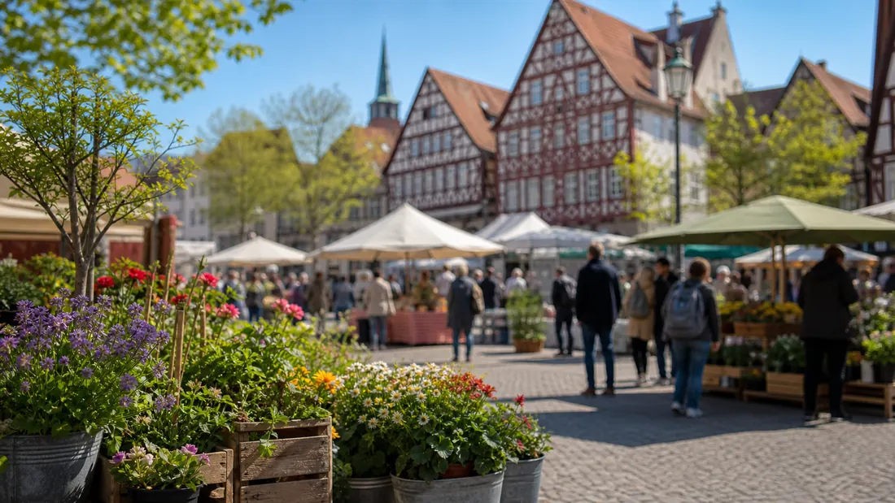

Tagesarchiv
55 regionale Meldungen
Alle Karten öffnen die jeweilige Originalmeldung.

Hessen Aktuell
Regionale Meldungen dieses Tages, gesammelt aus den aktiven Quellen und nach Stadt sowie Thema lesbar.
Tagesarchiv
Alle Karten öffnen die jeweilige Originalmeldung.
Meldungen

Kassel · Verkehr
Die Winterpause naht für die Baustelle in der Leuschnerstraße. Und das bedeutet: Wohl ab Mittwochnachmittag, 18. November, kann der Verkehr in beiden Richtungen bis auf Weiteres wieder fließen.

Kassel · Veranstaltungen
Wer Kassels Kulturszene einmal ganz persönlich und unterhaltsam kennenlernen möchte, hat dazu am Montag, 7. Dezember, Gelegenheit: Für die nächste Ausgabe von „KasselKultur Live“ im Kulturhaus Dock 4 sind noch Anmeldungen möglich.

Kassel · Politik
Rund 200 Menschen haben im Rathaus über Chancengleichheit, Vielfalt und gleichberechtigte Teilhabe in Kassel diskutiert. Mit dieser Veranstaltung hat die Stadt Kassel den Startschuss für die Entwicklung eines Chancengleichheits- und Vielfaltskonzepts gegeben.

Kassel · Politik
Landkreis Kassel stärkt fachübergreifende Vernetzung in der Prävention und Gesundheitsförderung Weitere Details, Hintergründe und vollständige Angaben stehen in der verlinkten Originalmeldung.

Kassel · Politik

Kassel · Politik
Qualifizierungsreihe „Kompetent begleiten, sicher betreuen“ vermittelt pädagogische Grundlagen für die Ganztagsbetreuung an Grundschulen
Kassel · Politik
Digitale Werkzeuge helfen beim Energiesparen, bei Sanierungsvorhaben und der Nutzung erneuerbarer Energien Weitere Details, Hintergründe und vollständige Angaben stehen in der verlinkten Originalmeldung.
Kassel · Politik
183 Menschen erhielten 2026 erstmals die Ehrenamtskarte Weitere Details, Hintergründe und vollständige Angaben stehen in der verlinkten Originalmeldung.

Kassel · Polizei
Unter dem Motto "Blitz für Kids" kontrollierten Beamte der Polizei in Waldeck-Frankenberg zusammen mit Kindern der Valentin-Grundschule in Helsen die Geschwindigkeit von Verkehrsteilnehmern.

Kassel · Polizei
In dem Ermittlungskomplex wegen besonders schweren Fällen von Erpressungen und Brandstiftungen ermitteln die Kasseler Staatsanwaltschaft und die eigens eingerichtete AG Bistro weiterhin mit Hochdruck.

Kassel · Polizei
Am 16.09.2026 gab es die nordhessische Premiere zum Format „Musik trifft Prävention“ in Bad Arolsen. Knapp 300 Bürgerinnen und Bürger waren der Einladung der Stadt Bad Arolsen gefolgt.

Kassel · Polizei
Großer Andrang, viele tolle Gespräche und starkes Interesse an den verschiedenen Berufen der Einsatzkräfte: Darauf kann die Blaulichtfamilie nach der Veranstaltung in Kassel zurückblicken.
Kassel · Polizei
Die Kasseler Polizei und die Staatsanwaltschaft Kassel ermitteln aktuell in drei mutmaßlichen Erpressungsfällen, bei denen eine Tätergruppe von verschiedenen Geschäftsinhabern Geldsummen forderten.

Frankfurt · Verkehr
Frankfurt (ots) - (di) Seit Freitagabend (13. November 2026) wird die 15-jährige Johanna B. aus Frankfurt Niederrad vermisst. Letztmalig wurde sie um 19:30 Uhr in der Oeserstraße in Frankfurt Nied gesehen. Johanna B. kann wie folgt beschrieben ...

Frankfurt · Verkehr
Frankfurt (ots) - Seit Sonntagnachmittag (15. November 2026) wird die 13-jährige Jannat D. vermisst. Letztmalig wurde sie am Sonntagnachmittag um 16:20 Uhr in Frankfurt Bornheim in der Ortenberger Straße gesehen. Jannat D. kann wie folgt ...
Frankfurt · Polizei
Frankfurt (ots) - (ha) Polizeibeamte hatten aufgrund polizeilicher Ermittlungsergebnisse in der Nacht von Sonntag (15. November 2026) auf Montag (16. November 2026) Anhaltspunkte dafür, dass sich Rauschmittel in einer Wohnung in der Offenbacher ...
Frankfurt · Polizei
Frankfurt (ots) - (ha) Ein Polizist wurde in der Nacht von Sonntag (15. November 2026) auf Montag (16. November 2026) im Zuge der Festnahme eines aggressiven Mannes im Bahnhofsviertel leicht verletzt. Polizeibeamte wurden gegen 03:00 Uhr zum ...
Frankfurt · Polizei
Frankfurt (ots) - (di) Bei einem Zusammenstoß zwischen einem Streifenwagen und einem Pkw entstand gestern Mittag (15. November 2026) im Westend erheblicher Sachschaden. Drei Personen wurden dabei verletzt. Nach bisherigen Erkenntnissen zum ...

Frankfurt · Verkehr
Ab sofort können Kund:innen der VGF viele Anliegen bequem per Video klären. Weitere Details, Hintergründe und vollständige Angaben stehen in der verlinkten Originalmeldung.
Frankfurt · Verkehr
Andere Linien als Alternativen verstärkt, Straßenbahn-Sonderlinie und Busse als Ersatz Weitere Details, Hintergründe und vollständige Angaben stehen in der verlinkten Originalmeldung.
Frankfurt · Verkehr
Schienenersatzverkehr zwischen Kupferhammer und Hohemark Weitere Details, Hintergründe und vollständige Angaben stehen in der verlinkten Originalmeldung.
Frankfurt · Verkehr
Linie 14 und Ebbelwei-Expreß auf Umwegen / SEV eingerichtet Weitere Details, Hintergründe und vollständige Angaben stehen in der verlinkten Originalmeldung.
Frankfurt · Verkehr
Magistrat gibt Planungsmittel frei. Weitere Details, Hintergründe und vollständige Angaben stehen in der verlinkten Originalmeldung.
Frankfurt · Verkehr
Zukunftssichere Versorgung für Frankfurt. Der Lerchesberg bekommt eine neue Energie-Infrastruktur. Wir bereiten das Netz auf künftige Anforderungen vor.

Frankfurt · Sicherheit
Entgegen dem Markttrend bleibt der Preis in der Erdgas-Grundversorgung stabil. Strom steigt leicht. Weitere Details, Hintergründe und vollständige Angaben stehen in der verlinkten Originalmeldung.

Frankfurt · Sicherheit
Aktuell häufen sich in Frankfurt und in der Rhein-Main-Region Werbebriefe, die zum schnellen Wechsel auf intelligente Stromzähler, sogenannte Smart Meter, drängen.

Frankfurt · Wirtschaft
Mainova unterstützt die F-Jugend des JFV Walsdorf/Wörsdorf e. V. mit vergünstigten Trikotsätzen – Fußballlegende Charly Körbel begleitet die Übergabe.
Frankfurt · Verkehr
Die Mainova AG beginnt am Montag, 26. Oktober 2026, mit vorbereitenden Maßnahmen für den künftigen Fernwärmeanschluss des Frankfurter Zoos.
Wiesbaden · Verkehr
In der Nacht zum Montag, 16. November, kam es gegen 0.17 Uhr in der Platter Straße auf Höhe der Hausnummer 98 zu einem Rohrbruch.
Wiesbaden · Politik
Angela Tausendpfund, Geschäftsführerin der kommunalen EGW Gesellschaft für ein gesundes Wiesbaden mbH, hat sich entschieden, ihren Geschäftsführungsvertrag auf eigenen Wunsch aus persönlichen Gründen zum 30. April 2027 zu beenden.
Wiesbaden · Verkehr
Die Abteilung Altenarbeit des Amtes für Soziale Arbeit lädt im Rahmen des Programms „Freizeit & Kultur ab 55plus“ zum monatlichen Tanztee ein. Die Veranstaltung beginnt am Mittwoch, 18. November, um 15 Uhr im Salon Liesel, Goerdeler Straße 47.
Wiesbaden · Politik
Von Donnerstag, 19. November, bis Mittwoch, 23. Dezember, verwandelt sich das Gebäude der ehemaligen Sportarena, Langgasse 5-9, erneut in einen stimmungsvollen Pop-up-Markt mit 45 regionalen Anbietern, Weinangeboten und einem abwechslungsreichen Mitmachprogramm.
Wiesbaden · Politik
Die vielfach ausgezeichnete Autorin Iris Wolff kuratiert das Programm der 25. Wiesbadener Literaturtage, die vom 8. bis 14. September 2027 stattfinden werden.
Wiesbaden · Polizei
Wiesbaden (ots) - 1. 21-Jähriger mit Messer im Gesicht verletzt, Wiesbaden-Südost, Biebricher Allee, Samstag, 14.11.2026, 00:20 Uhr (kq)In der Nacht zum Samstag wurde ein 21-Jähriger in Wiesbaden von einem unbekannten Mann mit einem Messer ...
Wiesbaden · Polizei
Wiesbaden (ots) - Gemeinsame Pressemitteilung des Hessischen Landeskriminalamts und des Handelsverbands Hessen Am Freitag, 13. November, fand der zweite landesweite Aktionstag von hessischer Polizei und Handelsverband Hessen statt. Neben der ...
Wiesbaden · Polizei
Wiesbaden (ots) - 1.Trunkenheitsfahrt statt medizinischem Notfall, Wiesbaden, Amrumer Straße, Freitag, 13.11.2026, 22.56 Uhr (nn) Am Freitagabend, kurz vor 23.00 Uhr fuhr ein Rettungswagen und die Feuerwehr in die Amrumer Straße, da sich eine ...
Wiesbaden · Polizei
Wiesbaden (ots) - (cp) Die heute um 17:10 Uhr veröffentlichte Vermisstenfahndung nach der 62-jährigen Frau aus Heidenrod-Watzelhain wird hiermit zurückgenommen. Die Vermisste konnte wohlbehalten in Wiesbaden angetroffen werden. Rückfragen bitte ...
Wiesbaden · Polizei
Wiesbaden (ots) - Ausstellung des Fotografen Rafael Herlich gibt Einblicke in den jüdischen Alltag und setzt Zeichen für Vielfalt, Begegnung und gegenseitiges Verständnis, Wiesbaden, Polizeipräsidium Westhessen, Freitag, 13.11.2026 Mit einer ...
Darmstadt · Politik
ENTEGA unterstützt Aktion „Winterhilfe Uzhhorod" Weitere Details, Hintergründe und vollständige Angaben stehen in der verlinkten Originalmeldung.

Darmstadt · Veranstaltungen
Gedenkveranstaltungen auf dem Waldfriedhof, in Arheilgen, Eberstadt und Wixhausen Weitere Details, Hintergründe und vollständige Angaben stehen in der verlinkten Originalmeldung.
Darmstadt · Polizei
Darmstadt (ots) - Nachdem sich ein 21-jähriger Tatverdächtiger am Montagabend (16.11.) einer Verkehrskontrolle entzog, konnte ihn eine Streife des 2. Polizeireviers vorläufig festnehmen. Gegen 23.45 Uhr fiel der Polizeistreife ein E-Scooter im ...
Darmstadt · Polizei
Darmstadt (ots) - Bislang unbekannte Täter hatten es am Montagabend (16.11.) in einer Sporthalle in der Straße "Auf der Hardt" auf Wertgegenstände abgesehen. Nach derzeitigem Kenntnisstand betraten die Kriminellen zwischen 18.00 und 19.15 Uhr das ...
Darmstadt · Polizei
Darmstadt (ots) - Nach einer am frühen Sonntagmorgen (15.11.) gegen 5 Uhr im Bereich der Schustergasse stattgefundenen Auseinandersetzung suchen die Ermittlerinnen und Ermittler der Kripo nach Zeugen. Nach derzeitigen Erkenntnissen soll ein bislang ...
Darmstadt · Polizei
Darmstadt (ots) - In der Nacht zum Freitag (13.11.) hatten es bislang unbekannte Kriminelle auf ein Büro und ein Geschäft an der "Waldspirale" abgesehen. Über ein Fenster drangen die Einbrecher gewaltsam in ein Büro ein und durchsuchten die ...
Darmstadt · Polizei
Darmstadt (ots) - In der Nacht zum Sonntag (15.11.) haben Kriminelle einen grauen Dacia Duster entwendet. Das Fahrzeug mit dem amtlichen Kennzeichen DA-KB 212 war auf einem Parkplatz in der Otto-Röhm-Straße abgestellt. Die Unbekannten verschafften ...
Hessen · Verkehr
Mansoori will bezahlbare Energie und verlässliche Rahmenbedingungen zum Schwerpunkt machen Weitere Details, Hintergründe und vollständige Angaben stehen in der verlinkten Originalmeldung.
Hessen · Verkehr
Baupaket II im Hessischen Landtag: Weniger Bürokratie, mehr Freiheit beim Bauen und schnellere Verfahren Weitere Details, Hintergründe und vollständige Angaben stehen in der verlinkten Originalmeldung.
Hessen · Verkehr
Mittelstandsbericht 2026 zeigt seine Bedeutung für Beschäftigung, Ausbildung und die Regionen Weitere Details, Hintergründe und vollständige Angaben stehen in der verlinkten Originalmeldung.
Hessen · Politik
Haushalt 2027: Bezahlbarer Wohnraum, verlässliche Infrastruktur und gute Arbeitsplätze. Weitere Details, Hintergründe und vollständige Angaben stehen in der verlinkten Originalmeldung.
Hessen · Verkehr
Landtag berät Anpassung an neue Mieterschutzverordnung Weitere Details, Hintergründe und vollständige Angaben stehen in der verlinkten Originalmeldung.
Hessen · Politik
In Frankfurt sind zwölf Projekte mit dem Staatspreis Universelles Design ausgezeichnet worden. Finanzminister Prof. Dr. R. Alexander Lorz hat den Preisträgern gratuliert.
Hessen · Politik
Der Schweriner Landtag hat Manuela Schwesig für eine dritte Amtszeit gewählt. Ministerpräsident Boris Rhein hat ihr dazu gratuliert und auf die gute Zusammenarbeit verwiesen.
Hessen · Polizei
Zum Start der Adventszeit begleitet die Polizei die Weihnachtsmärkte mit hoher Präsenz und konsequenten Kontrollen. Innenminister Roman Poseck stellt ein Höchstmaß an Sicherheit in Aussicht.
Hessen · Politik
Regierungschef Rhein: „Wenn Frankfurt gewinnt, dann wird auch Europa als Finanz- und Kapitalmarkt stärker.“ Weitere Details, Hintergründe und vollständige Angaben stehen in der verlinkten Originalmeldung.
Hessen · Politik
Bei der zentralen Gedenkstunde zum Volkstrauertag in der Frankfurter Paulskirche hat Ministerpräsident Rhein an die Opfer von Krieg und Gewaltherrschaft erinnert.